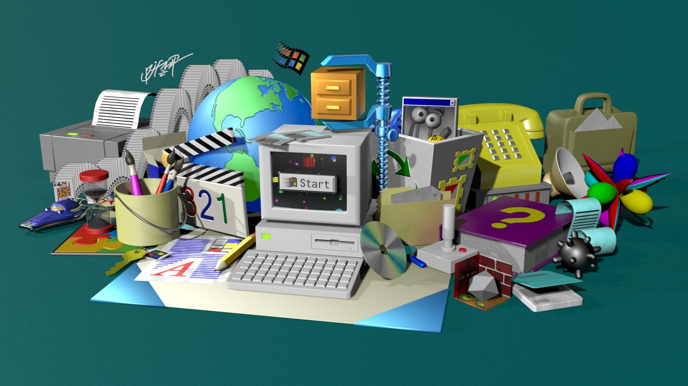

“start me up” (windows 95)
(originally completed july 21, 2022)
was bored while working on my website so i decided to detour and make multiple models of a bunch of windows 95 icons, eventually leading me to just make a bunch of other windows 95 features, compatible products and games
alternatively: try and guess all of the icons and things featured